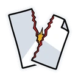

Un messaggio breve e non bloccante in basso al centro: conferma (“info”) o errore. Si chiude da solo, tranne l'errore da riprovare.
Superficie scuro in entrambi i temi (.panel-surface), raggio --r-row, altezza minima --row-h. Info: cerchio oro con spunta; errore: illustrazione err-toast.webp. Testi veri dal codice.

Ogni volta che si segna o si toglie un titolo visto compare un toast info con la sola riga del titolo (nessun messaggio) e un'azione. Ha sempre lo stesso id (list-change): un nuovo cambio aggiorna il toast sul posto, senza impilarne altri. Con l'azione dura 8 s.
| Chi | Gesto | Titolo (chiave) | Azione | Fonte |
|---|---|---|---|---|
| Con account | segna come visto | planner.list.added | common.undo: ripete il gesto al contrario, senza altro toast | useWatched.ts r.113-129 |
| Con account o ospite | toglie il visto | planner.list.removed | common.undo | useWatched.ts r.113-129 |
| Ospite | segna come visto | planner.list.savedOnDevice | nav.login: apre il popup di accesso (openAuthDialog("login")); l'elenco dell'ospite sta sul dispositivo, quindi qui non c'è Annulla | useWatched.ts r.114-129 |
Annulla chiama toggle(id, true) (silenzioso): non compare un altro toast. Se il salvataggio fallisce compare invece il toast persistente di errore con Riprova (tono errore, sopra).isLoading) finché l'azione termina; il codice non chiude il toast dopo l'azione, resta fino alla scadenza degli 8 s (non verificato nel browser).enqueue, r.38-42): un tocco e un nuovo tocco arrivano al server nell'ordine, ma il toast si mostra solo dopo il salvataggio riuscito.| Lingua | planner.list.added | planner.list.removed | planner.list.savedOnDevice | common.undo | nav.login |
|---|---|---|---|---|---|
| it | Aggiunto alla tua lista | Rimosso dalla tua lista | Salvato su questo dispositivo | Annulla | Accedi |
| en | Added to your list | Removed from your list | Saved on this device | Undo | Sign in |
| fr | Ajouté à votre liste | Retiré de votre liste | Enregistré sur cet appareil | Annuler | Se connecter |
| es | Añadido a tu lista | Quitado de tu lista | Guardado en este dispositivo | Deshacer | Iniciar sesión |
| de | Zu deiner Liste hinzugefügt | Aus deiner Liste entfernt | Auf diesem Gerät gespeichert | Rückgängig | Anmelden |
Solo nel tema scuro: --toast-shadow vale none in chiaro e var(--shadow-pop), 0 0 0 1px var(--ink-2) in scuro (tokens.less). È un overlay: livello 2 della regola delle ombre.
MAX_VISIBLE = 3 (toastQueue.ts). Con lo stesso id il toast si aggiorna sul posto. Oltre 3 esce il più vecchio non persistente; un toast info non spinge mai fuori uno persistente, un errore può spingere fuori un altro persistente.
| Caso | Durata | Fonte |
|---|---|---|
| Predefinita | 6000 ms | DEFAULT_DURATION, ToastProvider.tsx |
| Con azione da raggiungere | 8000 ms | ACTION_DURATION, ToastProvider.tsx |
| Minimo assoluto | 4000 ms (anche se una durata passata è più corta) | Math.max(duration ?? base, 4000) |
Persistente (persistent: true) | non si chiude da solo | ToastProvider.tsx |
| Pausa | con puntatore sopra o focus dentro il timer si ferma; al rilascio riparte per intero (nel codice: “shortcut: the timer restarts in full after a pause”) | ToastProvider.tsx |
role="alert" per l'errore, role="status" per gli altri; il contenitore è aria-live="polite".--hit), focus oro 3px.Fisso in basso al centro, bottom: max(16px, safe-area), larghezza min(440px, 100vw − 32px), z-index 20. Con la barra di avanzamento mobile visibile i toast salgono sopra di essa. Le misure 440px, 36px (icona e cerchio), 16px non hanno token: valore senza token
| Selettore | Valori nel codice |
|---|---|
.toasts | position: fixed r.4left: 50% r.5bottom: max(16px, env(safe-area-inset-bottom)) r.6z-index: 20 r.7display: flex r.8flex-direction: column r.9gap: var(--sp-2) r.10width: min(440px, calc(100vw - 32px)) r.11transform: translateX(-50%) r.12pointer-events: none r.13 |
body:has(.floating-progress[data-visible="true"]) .toasts | bottom: calc( var(--floating-progress-height) + var(--floating-progress-gap) + max(16px, env(safe-area-inset-bottom)) ) r.18 |
.toast | .panel-surface() r.25font-weight: 400 r.27display: flex r.28align-items: center r.29gap: var(--sp-3) r.30min-height: var(--row-h) r.31padding: var(--sp-2) var(--sp-2) var(--sp-2) var(--sp-3) r.32border-radius: var(--r-row) r.33box-shadow: var(--toast-shadow) r.34pointer-events: auto r.35 |
.toast__icon | flex: none r.39width: 36px r.40height: 36px r.41 |
.toast__badge svg | width: 20px r.57height: 20px r.58stroke-width: 3 r.59 |
.toast__badge | display: inline-flex r.46flex: none r.47align-items: center r.48justify-content: center r.49width: 36px r.50height: 36px r.51border-radius: var(--r-pill) r.52background: var(--highlight) r.53color: var(--deepest) r.54 |
.toast__text | display: flex r.64flex: 1 r.65flex-direction: column r.66min-width: 0 r.67 |
.toast__text strong | font-weight: 800 r.71 |
.toast__action.btn | flex: none r.75background: var(--raised) r.76color: var(--highlight) r.77 |
.toast__close svg | width: 20px r.90height: 20px r.91 |
.toast__close:focus-visible | outline: 3px solid var(--highlight) r.95 |
.toast__closehover (puntatore fine) | background: var(--raised) r.98 |
.toast__close | display: grid r.81flex: none r.82place-items: center r.83width: var(--hit) r.84height: var(--hit) r.85border-radius: var(--r-pill) r.86color: inherit r.87 |
Fonte: src/components/ui/Toast/Toast.less (commit c520ab1), righe indicate come r.N.
Ingresso: dissolvenza in --dur-enter (240ms) con swap-in di 6px dal basso quando il movimento non è ridotto. Non esiste un'animazione di uscita nel codice: il toast sparisce di colpo.
| Selettore | Valori nel codice |
|---|---|
.toast | animation: fade-in var(--dur-enter) var(--ease-out) both r.25 |
.toast@media (prefers-reduced-motion: no-preference) | animation-name: swap-in r.519 |
Fonte: src/styles/motion.less (commit c520ab1), righe indicate come r.N.
| Lingua | auth.login.done | error.codeCopied | errors.save.title | errors.save.body | common.retry |
|---|---|---|---|---|---|
| it | Bentornato, eroe. | Codice copiato | Impossibile salvare la modifica | Controlla la connessione e riprova. | Riprova |
| en | Welcome back, hero. | Code copied | Unable to save the change | Check your connection and try again. | Try again |
| fr | Connexion réussie. | Code copié | Impossible d'enregistrer la modification | Vérifiez votre connexion et réessayez. | Réessayer |
| es | Sesión iniciada. | Código copiado | No se puede guardar el cambio | Comprueba la conexión e inténtalo de nuevo. | Reintentar |
| de | Angemeldet. | Code kopiert | Änderung konnte nicht gespeichert werden | Prüfe deine Verbindung und versuche es erneut. | Erneut versuchen |
Che cosa è cambiato rispetto alla pagina precedente del canvas.
| Cosa | Prima (canvas vecchio) | Dopo (codice) | File |
|---|---|---|---|
| Durata | 4 s (ERRORI_SPEC) | 6 s, 8 s con azione, minimo 4 s | ToastProvider.tsx |
| Pila | non definita | massimo 3, regole di sfratto | toastQueue.ts |
| Ombra | sempre | solo in scuro, --toast-shadow | tokens.less |
| Testo del messaggio | regolare | grassetto solo sul titolo (.toast__text strong, 800); il resto del toast errore è peso 400 (.toast riporta font-weight: 400 perché [role="alert"] in base.less r.235 lo renderebbe grassetto) | Toast.less r.26-27, r.70-71; base.less r.235 |
| Uscita | dissolvenza dichiarata | nessuna animazione di uscita nel codice | motion.less |
Confermato: dopo il clic il toast si chiude (ToastProvider.tsx r.43-51: runAction esegue await item.action?.onClick() e nel finally chiama onDismiss(id)). Corretto un dettaglio: la chiusura avviene dopo l'attesa, non al clic. Se l'azione fallisce e rimette in coda un toast con lo stesso id (caso Riprova sul salvataggio), il finally chiude anche quello nuovo: l'errore sparisce subito (non verificato nel browser). Regola decisa sotto.
| Pulsante | Dove | Effetto oggi | Effetto deciso |
|---|---|---|---|
| Annulla | planner.list.added/removed (useWatched.ts) | esegue l'azione, poi chiude | chiude al clic, poi esegue l'azione |
| Accedi | planner.list.savedOnDevice | apre il popup di accesso, poi chiude | chiude al clic, poi apre il popup |
| Riprova | errors.save.* (toast persistente) | riprova, poi chiude (anche l'errore nuovo) | chiude al clic; se fallisce di nuovo ne compare uno nuovo |
Decisione: la X e l'azione sono due cose diverse (rinunciare / fare), ma sul toast che si chiude da solo la X è rumore: l'azione chiude già il toast, il timer fa il resto, Esc chiude da tastiera. La X resta solo sul toast persistente (errore con Riprova): lì non c'è timer e serve un modo per rinunciare. Durate: info 4 s, con azione 6 s (erano 6 s e 8 s). Restano la pausa con puntatore o focus e il minimo di 4 s.
| Caso | X | Durata | Perché |
|---|---|---|---|
Info senza azione (auth.login.done, error.codeCopied) | no | 4 s | una riga si legge in meno di 3 s |
| Info con azione (Annulla, Accedi) | no | 6 s | il tempo di accorgersi e toccare; la pausa su puntatore o focus resta (WCAG 2.2.1 rispettato dalla pausa) |
| Errore persistente con Riprova | sì | nessun timer | una scelta in sospeso non deve sparire |
Per ogni voce: com'era nel codice 2b5e07a (prima), che cosa decide questa pagina (dopo), file da toccare.
| Cosa | Prima | Dopo | File |
|---|---|---|---|
| Pulsante di chiusura | sempre presente (.toast__close) | solo se persistent | ToastProvider.tsx; Toast.less r.80 |
| Durata base | DEFAULT_DURATION = 6000 | 4000 | ToastProvider.tsx |
| Durata con azione | ACTION_DURATION = 8000 | 6000 | ToastProvider.tsx |
| Chiusura dopo l'azione | nel finally, dopo l'attesa | prima dell'await; isPending non serve più | ToastProvider.tsx r.44-47 |
| Larghezza con pulsante di chiusura | spazio riservato per la X | senza X il testo guadagna 44px | Toast.less r.74-80 |
Dopo la scelta nel popup di unione compare un toast informativo con il testo merge.toast (“Planner uniti: N titoli visti”). Nel codice non ha il pulsante “Annulla”: l'unione non si annulla dal toast. Per le tre scelte (unisci, tieni account, usa dispositivo) il testo è lo stesso, con N = titoli visti dopo la scelta. Letto dal codice su main c520ab1; i valori non sono scritti a mano.
| Lingua | merge.toast |
|---|---|
| it | Planner uniti: N titoli visti |
| en | Planners merged: N watched titles |
| fr | Planners fusionnés : N titres vus |
| es | Planners unidos: N títulos vistos |
| de | Planner zusammengeführt: N gesehene Titel |